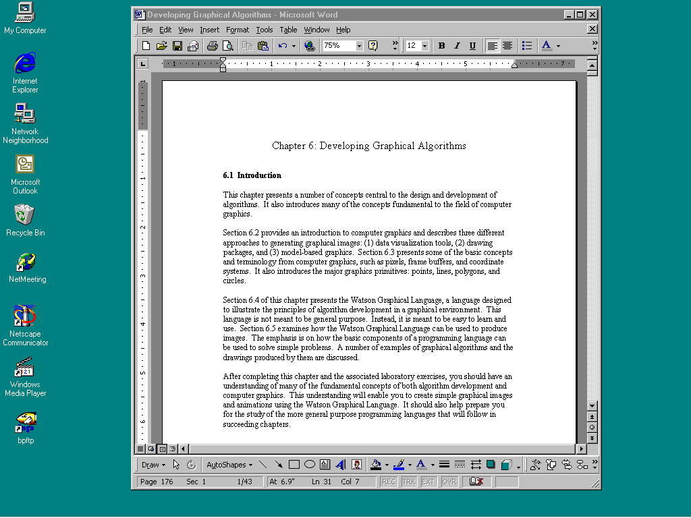
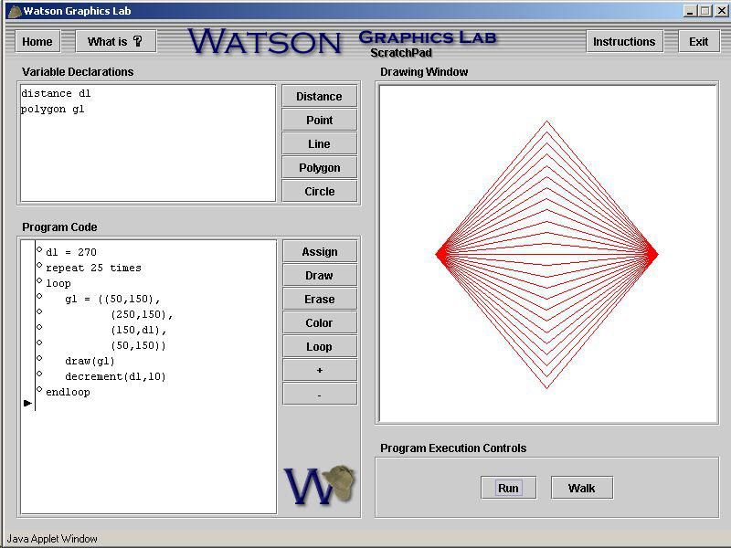

6.1 Introduction
This chapter presents a number of concepts central to the design and development of algorithms. It also introduces many of the concepts fundamental to the field of computer graphics.
Section 6.2 provides an introduction to computer graphics and describes three different approaches to generating graphical images: (1) data visualization tools, (2) drawing packages, and (3) model-based graphics. Section 6.3 presents some of the basic concepts and terminology from computer graphics, such as pixels, frame buffers, and coordinate systems. It also introduces the major graphics primitives: points, lines, polygons, and circles.
Section 6.4 of this chapter presents the Watson Graphical Language, a language designed to illustrate the principles of algorithm development in a graphical environment. This language is not meant to be general purpose. Instead, it is meant to be easy to learn and use. Section 6.5 examines how the Watson Graphical Language can be used to produce images. The emphasis is on how the basic components of a programming language can be used to solve simple problems. A number of examples of graphical algorithms and the drawings produced by them are discussed.
After completing this chapter and the associated laboratory exercises, you should have an understanding of many of the fundamental concepts of both algorithm development and computer graphics. This understanding will enable you to create simple graphical images and animations using the Watson Graphical Language. It should also help prepare you for the study of the more general purpose programming languages that will follow in succeeding chapters.
6.2 What is Computer Graphics?
Computer graphics is the study of how to create images using a computer. This area of computer science is not only interesting for its own sake, but has many practical applications as well. We are all familiar with the stunning special effects from movies such as “Star Wars: Attack of the Clones” and “Matrix II”, as well as television shows such as “Star Trek: Enterprise” and “Farscape”. Many of the special effects for these movies and TV shows are created with the help of computer graphics. The visual aspects of other movies, such as “Final Fantasy”, were completely generated using computer graphics.
In addition to special effects, computer graphics are also central to another exciting field: the development of “virtual reality” or VR. VR is the collection of hardware and software that allows a person to interact with a computer generated world by providing real time visual, auditory, and tactile feedback based on his or her actions. In other words, by having the user wear some special equipment, such as a helmet and glove, the computer can determine where that person is looking and what they are touching. It uses this information to provide the appropriate images, sounds, and tactile feedback to make the experience realistic. Proposed uses for VR range from the mundane (e.g., attending electronic classes and business meetings) to the whimsical (e.g., becoming a knight and slaying a dragon). Of course, to maintain an acceptable level of realism, the computer must be able to quickly generate high quality graphical images of whatever the person is looking at.
A more common, but somewhat less exciting, application of computer graphics is the GUI, Graphical User Interface, (often pronounced “gooey”). GUIs implement an interface “metaphor”, such as a desktop, which allows people to interact with computer systems. Software objects, such as programs and data files, are generally represented as
Figure 6.1: A Graphical User Interface
postage-stamp-sized pictures called icons. A human can access one of these objects by selecting it with a pointing device, such as a mouse. When “opened”, an icon expands to become a window. A window is a portion of the computer screen used to communicate with a particular program. Windows and icons, generally, can be resized, made larger or smaller, and repositioned anywhere on the “desktop”. A picture of a graphical user interface is presented in Figure 6.1.
GUIs are the most common type of interface between humans and computers. They probably also represent the most widely used application of computer graphics technology. Most software products, such as spreadsheets, word processors, and databases are GUI-based. All popular computer operating systems, including all Microsoft operating systems since Windows ’95 and all Apple operating systems since the original Macintosh OS, are fully GUI-based.
Computer graphics is a very broad area with many different kinds of applications. Not only are there many different uses for computer graphics, there are also many different approaches for creating graphical images on a computer. These approaches developed in response to different types of problems. Three approaches are briefly discussed below:
Data visualization is the process of creating a graphical image from a collection of data points. This approach is typified by most spreadsheet programs, which include the ability to automatically create pie charts, bar charts, and graphs from tables of data. As an example, Figure 6.2 contains a table listing the United States federal government outlays for fiscal year 2000 as relative percentages. The data is presented in the form of a pie chart in Figure 6.3. This visual representation of the data was automatically generated by the word processor used to write this text, Microsoft Word.
Figure 6.2: United States federal outlays for fiscal year 2000 (tabular form)
Figure 6.3: United States federal outlays for fiscal year 2000 (pie chart)
Clearly, graphical images of this type are very useful since they allow a person to quickly get a “feel” for the data, without having to carefully analyze an entire table of numbers. The ability to produce images from a collection of data becomes critical when the amount of data is very large. Many scientific disciplines depend heavily on data visualization. For example, models of atmospheric conditions such as temperature and humidity, which are used to help predict the weather, can easily contain millions of data points. Without the ability to visualize this data, say by color coding it and plotting it by location, it would be almost impossible to spot trends or draw overall conclusions.
A second approach for generating graphical images involves using the computer as an electronic canvas. A person draws an image on a computer screen using some input device, such as a mouse or electronic pen. Computer programs that implement this approach to computer graphics are known as “drawing packages”. Electronic canvases, implemented by drawing packages, are in some ways superior to real drawing canvases, since they generally provide assistance in creating the drawing. For example, drawing packages usually provide a collection of predefined shapes such as straight lines and circles that can be drawn in any size, at any location on the canvas, using one of a large number of colors.
Drawing packages are put to a diverse range of uses, from architectural drafting to graphic arts and fine arts. This diversity is reflected in the wide variety of drawing packages that are available; ranging from very basic to quite elaborate. Basic drawing packages are usually sufficient for creating simple line drawings for reports or memos, and are often included in document creation software. More elaborate drawing packages can be used to create professional quality graphic art. Many packages include the ability to scan in a photograph, or conventionally produced piece of artwork, and touch up the image using the electronic equivalent of airbrushing.
A third approach to computer graphics involves the use of computer programs to produce images based on an internal model of the objects to be rendered. The model holds the characteristics of the objects, such as their size, shape, color, and location. Software automatically generates an image of the objects based on the details stored in the model. This approach is the most flexible since the objects may be viewed under different conditions. Many graphics programs allow the user to view objects from almost any angle or distance and under different lighting conditions. The model of an object can also be modified by the graphics program; for example, the color or size of an object may be changed. When most computer scientists speak of computer graphics, they are generally referring to this model-based approach.
Model-based computer graphics underlie most PC and console game engines. When you play a game like “Halo”, for example, your view of its world must be rendered from moment to moment, and the effect of your actions computed in order to support smooth game play.
Another major use of the model-based approach to computer graphics is CAD. CAD stands for Computer Aided Design. The basic idea is to “construct” and “test” an object, such as an aircraft engine, inside a computer before actually building anything. CAD allows an engineer to quickly and inexpensively test out preliminary designs by constructing a prototype that only exists as a model inside a computer. This model would contain all of the graphical information mentioned above, but in addition, it would also contain information about the physical characteristics of the object being modeled, such as its tensile strength, melting point, etc.
6.3 Fundamental Graphical Concepts
The graphical images generated by PC’s, game consoles, and other computers are composed of hundreds of thousands of individual points of light. Each of these points of light is called a pixel. The word “pixel” is derived from the phrase “picture element”. A Pixel is the smallest individually addressable location of a graphics screen. If you get very close to a computer display, or better yet use a magnifying glass, you can clearly see the individual pixels making up an image. However, when looked at from a normal viewing distance, our eyes cannot distinguish the individual pixels – they visually merge to form an image.
(a) Image close-up showing individual pixels (b) A monochrome bitmapped image
(c) A portion of the image frame buffer corresponding to the close-up of part (a)
Figure 6.4: Pixels, bitmapped images, and frame buffers
Figure 6.4, parts (a) and (b), illustrate the relationship between pixels and graphical images. Part (a) shows a close-up of a small portion of an image. The full image, of a house, is shown in part (b). In the close-up the individual pixels that make up part of the side of the house and a corner of the widow can be clearly seen. In the overall image these pixels merge to form lines.
As we know, computers store digital data, ones and zeros. So the question naturally arises as to how PCs, game consoles, and other computers are able to store and display images. To render an image, a computer first places a digital version of the image into the frame buffer of the machine’s graphical subsystem (usually a graphics card or chip). The contents of the frame buffer are then used by the graphics hardware to generate the displayed image.
A frame buffer is just a block of high-speed computer memory that holds a “digital version” of an image. This version of the image consists of one’s and zero’s. For simple monochrome (black and white) images, the frame buffer holds a “1” for pixels that are on and a “0” for pixels that are off. This arrangement is illustrated in Figure 6.4, part (c), which shows the portion of the frame buffer that corresponds to the image close-up of part (a). As you can see, everywhere a pixel is active in the close-up, the frame buffer holds a “1”. The frame buffer holds a “0” for every inactive pixel. The main function of the graphics hardware is to scan the frame buffer, activating the display pixels corresponding to the locations of the frame buffer that contain “1”s. Because of this correspondence between the bits (0’s and 1’s) in the frame buffer and pixels on the screen, graphical images are sometimes referred to as bitmapped images.
Of course, in the real world, things are a bit more complicated. In order to create realistic graphical images, pixels must have color and intensity. So, instead of containing a “1” for pixels that are on and a “0” for pixels that are off, the frame buffer will contain numbers that represent each pixel’s color and intensity.
Most systems represent color using the RGB system. In RGB, there are three numbers per pixel – one number represents the intensity of the color “red”, another number represents the intensity of the color “green”, and a third number represents the intensity of the color “blue”. Typically, graphics systems can represent 256 individual shades of each of the primary colors: red, green, and blue – giving a combined “color palette” of over 1.6 million distinct colors.
The resolution of a graphical image is the number of individual dots, or pixels, that form the image. The size of the frame buffer and speed of the graphics hardware, generally determine an image’s resolution. Resolution is stated in terms of two numbers: the first specifies the number of pixels per line (the horizontal resolution), and the second specifies the number of lines per image (the vertical resolution).
Image resolution on game consoles is generally limited to 640 by 480 – that is, 640 pixels per line, with 480 lines per image. This resolution is the maximum that can be handled by most of the television sets to which game consoles are attached. Thus, image resolution on console games is unlikely to improve until high-definition television sets become more popular.[1] PC monitors, on the other hand, are capable of displaying higher resolution images. Common graphics modes include 800 by 600, 1024 by 768, and 1280 by 1024.
Even at a relatively low resolution of 640 by 480, a single image is composed of 307,200 pixels. When you consider that gamers typically demand 60 frames (or images) per second for smooth animation, you can begin to get a feel for how hard the graphics hardware must work to provide a realistic gaming experience.
At this point you may be wondering why the graphics standards are designed to be wider than they are tall. The reason for this is that most computer monitors and television screens are not square – they are constructed with an aspect ratio of 4 by 3. These displays are four units wide for every three units tall. Most graphics standards reflect this 4 by 3 ratio in order to make it easy to map images directly onto standard display devices without distortion.
Now that we have some feel for how the graphics hardware generates an on-screen image from an internal digital image, we can begin to examine how these digital images are defined or drawn. In order to do so, some background on Cartesian coordinate systems is first presented.
All graphical systems, at some level, use Cartesian coordinate systems to specify graphical images. You probably remember having studied coordinate systems in your math classes. They are often covered when discussing how to plot mathematical functions. A Cartesian coordinate system consists of two labeled axes at right angles to one another. Both are essentially number lines. One axis is drawn horizontally and is labeled X. The other axis is drawn vertically and is labeled Y. The point at which the two axes meet is called the origin. A picture of a Cartesian coordinate system with X labeled from -10 to +10 and Y labeled from -5 to +5 is given in Figure 6.5. You can see that the two axes divide space into four separate regions, or quadrants. The upper right hand quadrant is known as quadrant one. In quadrant one, X and Y values are always positive.
Figure 6.5: A Cartesian coordinate system showing a point a location (3,5)
Points in a Cartesian coordinate system are defined using two distances, the horizontal, X, distance from the vertical axis, and the vertical, Y, distance from the horizontal axis. The two distances are written in parentheses with the X distance always appearing first, followed by the Y distance. A comma separates the two distances. So, for example, the point (3,5) is located at X= 3, Y = 5; three horizontal units over from the Y-axis and five vertical units up from the X-axis. This point is plotted in Figure 6.5. Note that the origin of the coordinate system is located at (0,0) since it is zero horizontal units and zero vertical units from the two axes.
We usually define at least two separate Cartesian coordinate systems in computer graphics: the screen coordinate system and the world coordinate system. The screen coordinate system is used by the graphics hardware to actually produce the image. Screen coordinates are, therefore, physically dependent on the underlying graphics hardware, and cannot be changed by the programmer.[2] In screen coordinates, both X any Y coordinates are specified using positive integer values. The lengths of the two axes depend on the image resolution supported by the underlying graphics hardware. In an 800 by 600 system, legal X values would range from 0 to 799 and legal Y values from 0 to 599.
Somewhat unexpectedly, the origin point (0,0) of most screen coordinate systems is located in the upper left hand corner of the screen – with X values increasing from left to right and Y values increasing from top to bottom – rather than in the lower left hand corner with X increasing from left to right and Y from bottom to top. In other words, at the hardware level, the Y-axis is often “inverted” from its normal orientation. This detail is mentioned for the sake of completeness. It can usually be safely ignored since this quirk is hidden from all but the lowest levels of graphics software.
The world coordinate system is the system that is actually used by a program for drawing an image. World coordinates are not dependent on hardware and may be easily changed by the programmer. One reason for having world and screen coordinate systems is so that images can be created that do not depend on particular graphics hardware systems. Computer graphics hardware changes rapidly. A top-of-the-line graphics system today will probably be considered primitive in just a few years. For this reason it is important that graphical images not be tied to any one piece of hardware. Flexibility is another reason for having programmer definable world coordinate systems. The coordinate system used by one application may not be appropriate for a different application. For example, a floor plan of a house might be drawn in feet, while a highway map might use miles.
It is important to understand that the world coordinate system used by one program is totally separate from the world coordinate systems used by other programs. In modern
Figure 6.6: A line segment from (10,10) to (10, 20)
PC operating systems, every running program normally operates in its own resizable window. The operating system handles the positioning, moving, and resizing of these windows. The programs running within these windows each possess their own world coordinate system and are often not even aware of the size or on-screen position of the window in which they run. The operating system translates all drawing instructions issued by programs using their internal world coordinate systems to the machine’s physical screen coordinate system, so that their images may be rendered by the graphics hardware.
Now that we have an understanding of coordinate systems, we can turn our attention to the graphical primitives used to create images. Graphical primitives are the lowest-level graphical objects that can be specified by a computer program. Throughout the remainder of this chapter, we will concentrate on four graphical primitives: points, lines, polygons, and circles.
A point is the simplest graphical primitive. As we saw above, points are specified using a pair of coordinates, X and Y. Pixels and points are very similar. Both essentially appear as dots on the screen, and may have attributes such as color and intensity. However, since individual pixels are so very, very small, points are sometimes drawn as small clusters of adjacent pixels in order to make the point large enough to be clearly visible from a normal viewing distance.
In computer graphics, the word line is used to refer to a straight line segment. Lines are specified using two points: a starting point and an ending point. Like points and pixels, lines may have other characteristics such as color. Figure 6.6 illustrates a line from point (10, 10) to point (10, 20).
Another standard graphics primitive is the polygon. A polygon is a closed, multi-sided figure, such as a triangle, rectangle, or square. Polygons are usually thought of as a collection of connected line segments. To ensure that the lines are connected, the ending
Figure 6.7: A four-sided polygon
point of each line segment must be the starting point of the next line segment. Polygons are always closed figures because the end point of the last line segment must be the start point of the first line segment. Some definitions of polygon also require that none of the line segments cross, but we will not enforce that restriction in this text. A four-sided polygon is shown in Figure 6.7.
The final graphics primitive presented here is the circle. Circles may be defined by specifying a center point and a radius. A circle is the collection of points that are exactly the radius distance away from the center point. For example, Figure 6.8 (a) illustrates a circle with a center point at (10, 10) and a radius of 5. Note that in computer graphics a circle will not always appear round but may instead take on the shape of an ellipse. Figure 6.8 (b) shows what the same circle looks like when the world coordinates are defined as (0, 0) (15,30). The object in Figure 6.8 (b) still meets our definition of a circle, since all of the points are exactly 5 units away from the center. It looks the way it does because we have compressed space in the vertical, Y, dimension.
Figure 6.8: Two views of the same circle
6.4 A Simple Graphical Language
Most conventional programming languages allow you to do two things: define a collection of objects, and then manipulate those objects using a group of predefined instructions. The language presented in this section, the Watson Graphical Language or WGL, recognizes seven types of data objects and seven kinds of instructions. It can be used to draw pictures that are composed of points, lines, polygons, and circles. The Watson Graphical Language is also capable of producing primitive animation.
This section describes the features of the language: its data types and instructions. Don’t worry if you don’t immediately understand the purpose of some of the language features. Section 6.5 will show you some example programs and describe how they were created. That section should clear up any confusion about how you would actually use the language.
6.4.1 Data Types, Constants, Variables, and Expressions
WGL recognizes seven different types of objects. These data types are: distance, point, line, circle, polygon, counter, and color. Some of these data types, such as color and counter, can only be used in very limited ways, while others, such as distance, can be more extensively manipulated.
Every object, regardless of its type, must take the form of either a constant or a variable. A constant is a value of a particular type that does not change over time. An example of a distance constant is 3. An example of a constant of type color is blue. We say that these are constants since their “meaning” or “value” never changes: 3 is always 3 and blue is always blue. Values for any of the seven WGL data types can be represented using appropriate constants. As we shall see below, fixed rules exist that specify the precise form of each type of constant.
A color constant is simply the name of a common color. Examples are green, red, blue, and white. Bad and good, as you would expect, are not valid colors. What about something like teal? The answer is no, since teal is not considered “common” enough to be included in WGL. In general, you will not have to worry about borderline cases like these; since the way colors are specified in WGL is to select them from a palette of available colors. If the color is listed, then it is available. If it is not listed, it is not available.
Distance and counter constants take the form of non-negative integers. An integer is a whole number without a fraction. Non-negative integers are just numbers, like 5, 15, and 99. Each of these would be a valid distance or counter constant. Distance and counter constants are composed of the digits 0 through 9. They may not contain commas, decimal points, or any other special characters. Hence, 12.50 and 1,250 are not valid distances or counters. Constants of these types must also be non-negative, so -25 would not be valid either. Both counters and distances have a limited range of acceptable values. Distances can vary from 0 to 999, inclusive; while counters are limited to the range 1 - 99, inclusive. A counter value of zero is not allowed.
In addition to constants, most programming languages allow the programmer to define variables. A variable is a named object that can store a value of a particular type. Unlike constants whose values are always fixed, the value of a variable can change. At any particular point in time a variable will hold some specific value, but the programmer has the ability to change the value stored in that variable. Every variable has an associated type that describes the kinds of values that it can hold. WGL allows the programmer to define variables of type: distance, point, line, polygon, and circle. Variables of type color and counter are not allowed. These objects can exist only as constants in WGL.
A variable of type distance can hold a single integer value in the range 0 to 999, inclusive. Distance variables are always named beginning with the letter “d” followed by one or more digits (e.g., d1 or d5). So, if d1 were declared to be a variable of type distance, it could hold a value such as 100. As you might expect, a distance variable is usually used to indicate how far away something is.
An object of type point specifies a location using two distances: a horizontal, X, distance and a vertical, Y, distance. These distances are measured from the opposite axis: the X distance from the Y axis and the Y distance from the X axis. Constants of type point are expressed as these two distances, first X, then Y, separated by a comma and enclosed in parentheses. In other words, point constants take the form of (X, Y) where X and Y are distance constants. For example, (100,150) and (50,50) are point constants.
In addition to constants, the location of a point may also be specified by an expression. An expression in WGL is a collection of constants and/or variables, together with appropriate parentheses, that evaluate to a value of a particular type, such as point, line, circle, or polygon. Hence, if d1held a value of 100 and d2 a value of 200 then the expressions (d1, d2), (100, d2), and (d1, 200) each would specify a point at (100,200).
Variables of type point are always named beginning with the letter “p” followed by one or more digits (e.g., p1 or p3). If p1 were declared to be a point variable, it could hold any valid point value. Note, however, that it could not hold a distance such as 25, since 25 is not a valid point.
An object of type line specifies a straight line segment between two points. Line constants are composed of two points, separated by a comma and enclosed in parentheses. In other words, they take the form of ( START, END ) where START and END are points. For example, ( (100, 100), (200, 200) ) is a valid line constant that specifies a line segment starting at (100, 100) and ending at (200, 200). The first point is always the starting point and the second point is always the ending point of the line segment. Lines may be expressed using either constants or expressions, such as: (p1, p2) where p1 and p2 are points, or ( (d1, d2), (d3, d4) ) where d1, d2, d3, and d4 are all of type distance. Variables of type line are always named beginning with the letter “l” followed by one or more digits (e.g., l1 or l5). Remember that a variable of type line can hold any valid line but cannot hold anything else, such as an individual point or distance.
An object of type circle specifies a circle using a center point and radius. A value of type circle is composed of a point and a distance, separated by a comma and enclosed in parentheses. It takes the form of (CENTER, RADIUS) where CENTER is the center point of the circle and RADIUS is the circle’s radius. For example, if c1 were a variable of type circle, it could be defined by an expression such as (p1, d1) where p1 is a point and d1 is a distance, or ( (d1, d2), d3) where d1, d2, and d3 are all distance variables, or even the circle constant ( (100, 100), 50). Variables of type circle are always named beginning with the letter “c” followed by one or more digits.
The final object type recognized by WGL is the polygon. As was described in Section 6.3, a polygon is a closed, multi-sided figure. Polygons are expressed in WGL as a list of points separated by commas and enclosed in parentheses. WGL connects these points together with line segments to form a closed figure. A line will be drawn from the first point in the list to the second point, another line from the second point to the third, and so on. In order to ensure that the figure is closed, the last point in the polygon list must be identical to the first point in the list.
For example, if g1 were a polygon, a triangle in this case, it could be expressed as the following list of points: ( p1, p2, p3, p1). In this example, lines would be implicitly defined from p1 to p2; from p2 to p3; and from p3 back to p1. We can also express this polygon using only distance variables, such as: ( ( d1, d2), (d3, d4), (d5, d6), (d1, d2) ) or even distance constants, such as: ( (100, 100), (200, 100), (150, 150), (100, 100) ). Variables of type polygon are always named beginning with the letter “g”, since we are already using “p” for points, followed by one or more digits. Hence, g1, g3, and g5 are all valid polygon names.
6.4.2 Instructions
In addition to the ability to define objects such as constants and variables, WGL recognizes seven kinds of instructions: assignment, color, draw, erase, increment, decrement, and loop. These instructions manipulate the drawing environment and objects that are used to produce images.
Before describing each of these instructions, it is important to have an understanding of the world coordinate system in which objects will be drawn. The lower left hand corner of the WGL drawing window is always fixed at the origin, (0, 0). The upper right hand corner of the window is fixed at (299, 299). Hence, the drawing window is a logically square region 300 units wide by 300 units tall.
The assignment statement is used to place a value of a particular type into a variable of the same type. Assignment statements in WGL are often used to specify the size, shape, location, or orientation of an object. The format of an assignment statement in WGL is: VARIABLE = EXPRESSION where VARIABLE is replaced by a variable of some particular type and EXPRESSION is replaced by an expression of the same type. For example: p1=(100,100) is a valid assignment statement, assuming p1 is a variable of type point. This statement defines the location of p1 to be (100, 100). It does not actually draw anything in the drawing area – the statement simply places the constant (100, 100) into p1. To actually see the point, p1, it would be necessary to render it using the draw command discussed below.
The color statement is used to select a drawing color. This statement does not actually place anything on the screen. It is analogous to picking up a pen of a particular color. All subsequent draw commands will use the specified color until it is changed by issuing another color command. The format of the color statement is color(COLOR_NAME) where COLOR_NAME is a constant of type color. For example, color(blue) would set the drawing color to blue. The default drawing color is red.
The draw statement is used to display an object of type point, line, circle, or polygon, in the drawing area. An object must be completely defined before it can be drawn. The format of the draw statement is draw(OBJECT) where OBJECT is a variable of type point, line, circle, or polygon. Constants cannot be directly drawn; neither can distances, colors, and counters. For example, draw(l2) would be a valid draw statement as long as l2 had been declared as a line variable and an appropriate value had been assigned to it.
The erase statement is used to erase or “undraw” an object. Essentially, erase is just a draw statement where the object is drawn in white. Since white is the background color of the drawing area used in the Watson Graphics Lab, an object that has been previously drawn appears to be “erased” by this statement. Normally, an object is drawn before being erased, although technically in WGL it is not an error to erase an object before it has been drawn. All that is required is that the object be completely defined. The format of the erase statement is erase(OBJECT) where OBJECT is a variable of type point, line, circle, or polygon. For example, erase(l2) would be a valid erase statement as long as l2 had been declared as a line variable and an appropriate value had been assigned to it. Distances, colors, and counters cannot be erased, since they cannot be drawn.
The increment statement increases the value held in a distance variable by some constant amount. The format of the increment statement is increment(DISTANCE, AMOUNT) where DISTANCE is replaced by a distance variable and AMOUNT is replaced by a distance constant. For example, increment(d1,5) increases the value stored in d1 by 5 (e.g., if d1 had a value of 25 before this statement was executed, it would have a value of 30 afterwards). Note that only distance variables can be incremented. Points, lines, circles, polygons, counters, and colors cannot be incremented.
The decrement statement is similar to the increment statement, except that instead of increasing the value held in a distance variable, it decreases that value by some constant amount. The format of this statement is decrement(DISTANCE, AMOUNT) where DISTANCE is replaced by a distance variable and AMOUNT is replaced by a distance constant. For example, decrement(d1,5) decreases the value stored in d1 by 5 (e.g., if d1 had a value of 25 before this statement was executed, it would have a value of 20 afterwards). As with increment, only distance variables may be decremented. Points, lines, circles, polygons, counters, and colors cannot be decremented.
The loop statement is used to repeat a group of statements a fixed number of times. Loops are useful for drawing a series of similar objects and for creating simple animation sequences. The format of the loop statement is:
repeat COUNTER times
loop
<one or more statements>
endloop
where COUNTER is replaced by a positive integer constant in the range 1 to 99 and <one or more statements> is replaced by some number of WGL statements. The loop statement works by repeating the group of statements between loop and endloopCOUNTER number of times. For example, given the following loop:
the three statements: assignment, draw, and increment; will be repeated 5 times. The effect of this loop is to draw a series of five concentric circles centered at (100, 100).
6.5 Developing Algorithms with WGL
The previous section of this chapter introduced you to the major programming constructs available in the Watson Graphical Language. These constructs are analogous to tools. In this section we describe how these tools may be used to write programs that perform some particular task. If you like, you can think of the previous section as introducing what you have to work with in WGL while this section shows you how to actually draw pictures with WGL.
We will begin by exploring the creation of simple static images. A static image is an image that does not change over time. Programs that create more complex static images will be presented next, followed by programs that create dynamic images which do change their appearance over time. As you will see, the loop statement is invaluable for creating complex static and dynamic images.
If you have not done so already, now would be a good time to begin exploring the capabilities of the Watson Graphics Lab. This lab supports two different ways of creating images: an interactive mode and a program mode. The interactive mode allows you to draw images directly on the screen, using the mouse and drawing window. The program mode consists of an editor for constructing WGL programs and an interpreter for executing them.
Figure 6.9 contains an illustration of the Watson Graphics Lab. As you can see, the lab consists of four main regions: a “Drawing Window” used to display and interactively draw objects; a “Variable Declarations” window used to define and display program variables; a “Program Code” window for creating and editing program statements; and a “Program Execution Controls” window for running programs.
Figure 6.9: The Watson Graphics Lab
6.5.1 Creating Simple Static Images
The first image we will draw with the Watson Graphics Lab is a circle located in the center of the drawing window. In order to draw this circle using the lab’s interactive mode perform the following sequence of steps:
The circle should now appear in the drawing window. You may also notice that as you created the drawing, some text appeared in the Variable Declarations and Program Code windows. This text is, in fact, a WGL program to create the same image you just drew interactively. To see that this is true, you could run the program by pressing the Run button. Run will clear the drawing window then execute the program code. An example program that draws a circle in the center of the drawing window is presented in Figure 6.10. The program created by the environment from your interactively produced drawing should be similar. It may not be identical, however, because the actual location and size of the circle you defined may be somewhat different from the one defined here.
We have now seen that the Watson Graphics Lab is capable of automatically generating a WGL program from an interactively drawn picture. But, how does one go about writing a program to draw a circle from scratch – without using the interactive drawing mode?
Before starting to write any program you must first determine exactly what you want to accomplish. For a WGL graphics program, you must decide the objects you wish to draw, such as circles, lines, or points; and then select the characteristics of these objects, such as their location, size, and color. Only after determining what needs to be done should you turn to the question of how to go about achieving the desired result.
Figure 6.10: A program that draws a circle in the center of the drawing window
In our current example, you may think the “what” question has already been satisfactorily answered. What we want to do is “draw a circle in the center of the drawing window”. This is only a partial answer. We need more detailed information. Where, exactly, is the center of the drawing window located? What size should the circle be? What color should be used to draw the circle?
A circle is generally specified by a center point and radius, as discussed in Sections 6.3 and 6.4. Since Watson’s drawing window coordinate system is defined from 0 to 299 in both the X and Y directions, the “center” of the drawing window is located at (150,150).[3] Hence, (150,150) should be the center point of the circle. Next, we must decide how big we want the circle to be. Let’s say we want the circle to be 100 units across (i.e., have a diameter of 100 units). Since radius is always ½ diameter, the radius value will be 50. This will produce a medium-sized circle in the 300 by 300 drawing window. For the moment, let’s say that we don’t really care what color “ink” will be used to draw this circle.
Now that we have specified more precisely “what” we want the program to do, we can turn to the question of “how” the program should go about achieving this goal.
First, we need to tell Watson to create a circle. This is done by clicking on the Circle button which produces the following statement in the variable declarations window:
circle c1
Watson has now created a variable called c1 of type circle. Nothing is yet drawn in the drawing window. Why? Well, one reason is that we have not yet described the size and location of the circle. In order to do this, we need to assign values to the circle variable with the assignment statement. Pressing the Assign button will cause the following generic assignment statement to appear in the program code window.
VARIABLE = EXPRESSION
Note that the words “variable” and “expression” are in upper case. Upper case is used by the Watson Graphics Lab to indicate a placeholder of a particular type. Clicking on “variable” will cause a popup box to appear which lists all of the currently valid choices for “variable”. In this example there is only one valid choice: c1. Selecting c1 and then clicking the “OK” button will cause “variable” to be replaced by c1. In addition, the form of the assignment statement will change so that it now looks like this:
c1 = (( X , Y ), RADIUS )
The reason for this change is that once Watson knows that the object you wish to assign a value to is a circle, it will automatically provide the appropriate expression type. A circle always consists of a center point (X,Y) and a radius RADIUS. Clicking on the X, Y, and RADIUS place holders will allow you to specify appropriate values. Replacing X with 150, Y with 150, and RADIUS with 50, will result in the following complete assignment statement. (You can tell it is complete, since there are no upper case place holders.)
c1 = ((150,150),50)
Now Watson knows about a circle called c1. It knows where the circle should be located and how big it should be. So what happens if you press the Run button in order to execute the program? Nothing! Why? The answer is that you never told Watson to actually draw the circle, so it didn’t. This can be rectified by adding a “draw” statement to the program. Here is the generic draw statement.
draw( OBJECT )
Once we select “object” and replace it with c1, we have the following:
draw(c1)
Draw is an output statement. It draws an object in the drawing window. The object must be completely defined before it can be drawn. In general, this means that an object must be declared in the variable declarations window and then be assigned a value by appearing on the left hand side of the “=” operator in an assignment statement before it can appear in a draw command.
Our program is now identical to the one given in Figure 6.10, which was created interactively. Clicking the “Run” button will cause a medium-sized circle to be drawn in the center of the drawing window.
So far, this example has introduced three very important programming concepts: variable declarations, assignment, and output. Many beginning students tend to confuse these three concepts, but they are actually quite distinct. Variable declarations, such as circle c1, define the objects that may be manipulated by the program. In general, an object must be defined before it can be manipulated. Assignment statements, such as c1 = ((150,150),50) place particular values into variables that have already been declared. In our graphics language, assignment statements are used to define the characteristics, such as location and size, of objects. Output statements, such as draw(c1), are used to display results. They actually cause objects to be drawn in the drawing window.
To continue with our example, let’s say that having seen the output of this program we decide that the circle should be somewhat larger. Specifically, let’s change the diameter of the circle from 100 to 150 units. Hence, the radius should be increased from 50 to 75 units. This is very simple to do in the Watson Graphics Lab. Click the mouse on the value of 50 in the assignment statement. A popup box will appear which will allow you to enter another constant, in this case 75. After entering 75 press the “OK” button. The program now has the following form:
If you press the “Run” button, the drawing window will be cleared and the new, larger circle will be displayed.
Let’s make one more change to this example before moving on. The color that Watson draws with defaults to red. In other words, if you don’t specify a drawing color, Watson will choose red for you. Let us, instead, specify that the circle be drawn in green. This change is easily made by inserting a “color” statement before the draw statement. The color statement is equivalent to instructing Watson to pick up a pen of a particular color. Anything Watson draws after the color statement is encountered will be drawn in the specified color.
To insert a new statement in the program, click on (or just to the left of) the insertion symbol “ | ” at the beginning of the line on which you wish the insertion to take place. For this example, click on the “ | ” at the beginning of the draw(c1) line. You will notice that an insertion point symbol “ > ” now appears on an otherwise empty line directly above the draw command. The program code window now contains the following:
|o c1 = ((150,150),75)
>
|o draw(c1)
Clicking the “Color” button will place a “color” statement at the insertion point and then create a new insertion point on the line following that statement. Hence, the program code window will contain the following:
|o c1 = ((150,150),75)
|o color( COLOR_NAME )
>
|o draw(c1)
Next, the place holder “color_name” needs to be replaced with the color constant green. To do so, click on the “color_name” placeholder. A list of available colors will appear in a popup box. Select the color “green” and then press the “OK” button. Here is what the resulting program looks like.
|o c1 = ((150,150),75)
|o color(green)>
>
|o draw(c1)
Notice that the insertion point is still directly above the draw statement. This means that any new statements added to the program will be inserted between the color(green) and draw(c1) statements. The insertion point can be moved by clicking on the insertion symbol, “ | ”, on some other line of the program, or insertion can be “closed” by clicking on the insertion symbol anywhere below the last line of the program. When insertion is closed, all new statements are added to the end of the program. Since we do not wish to insert any more statements into the program at this time, we should close insertion.
Once insertion has been closed, our example program looks like this:
|o c1 = ((150,150),75)
|o color(green)
|o draw(c1)
You may now press the “Run” button to see the circle drawn with green ink. Pressing “Run” causes the following actions to take place. First, the center point and radius of circle c1, are set to (150,150) and 75, respectively. Second, the drawing color is set to green. Third, the circle c1 is drawn using the current drawing color, green. These actions will be taken in exactly the order indicated.
The order of statements in a program is very important. This is because computer languages depend on the concept of sequence. Sequence means that each statement is executed, or performed, in the order it is encountered in the program, starting at the first statement and proceeding to the last statement.
What if the statements of this program appeared in a different order? Say we decided to move the color statement so that it follows the draw statement. How could we accomplish this and what would be the effect of this change on the behavior of the program?
We have already seen how to insert statements into a WGL program using the insertion symbol “ | ”. It is also possible to delete WGL statements using the target symbol “ o ”. To remove a WGL statement from the program, first click on the target symbol to the left of that statement. The statement will be highlighted and a pop up confirmation box will appear. Press “OK” and the statement will be deleted.
In the current example, we want to move the color statement to the end of the program. While the Watson Graphics Lab does not directly support a “move” operation, the change can easily be achieved by (1) deleting the old color statement using the target symbol and then (2) inserting a new color statement at the end of the program. After making this change, the program will have the following form.
|o c1 = ((150,150),75)
|o draw(c1)
|o color(green)
Pressing “Run” will now cause: (1) the center point and radius to be assigned to the circle c1, as in the above example, (2) the circle to be drawn using the current drawing color, (3) the drawing color to be set to green. The result of this program is that a red circle will be drawn, since red is the default drawing color and the program draws the circle before changing the drawing color. Any draw commands appearing after the color(green) statement will be drawn using green “ink” – that is, until another color statement is encountered which changes the current drawing color yet again.
A more serious problem would occur if the assignment statement for c1 appeared after the draw statement for c1. The program would attempt to draw a circle before it had been told where to place the circle and how big it should be!
Watson tries to help you avoid some sequencing errors by preventing certain types of edit operations from taking place. For example, when specifying an “object” in the draw statement, Watson only presents those drawable objects that have already been assigned values. This helps prevent the kinds of errors in which the programmer attempts to draw an object before fully defining it. Be warned however, that while Watson can prevent you from making some simple mistakes, there are many errors it cannot prevent. When writing a program, you are “in charge”. Watson is just an assistant that tries to “help out” whenever it can.
At this point it is natural to ask yourself why you should learn to write WGL programs. After all, as demonstrated above, the Watson Graphics Lab can automatically write programs for you, so why should you bother to learn to produce them manually. This is a good question, and deserves a good answer. Here are three reasons why learning to write WGL programs is important:
Next, I present a somewhat more complex static image and develop a program to draw that image. One feature of this program will be the creation of complex objects from simpler objects. The program will introduce the data types: point, line, and polygon. Distance will also be further explored. An annotated version of the image the program is to produce is presented in Figure 6.11. The numbers and text will not be in the final image, they are included here only for reference.
In order to construct a program to draw this image, we should first concentrate on the question of what we want to draw, then address the issues of how we will proceed. The “what” question is not as straight forward as it first appears, since there are many ways of describing the image of Figure 6.11. One could view the example image as simply a
Figure 6.11: Box shaped polygon with two intersecting lines
collection of points arranged in a certain way. Another view is as six separate lines. The image may also be viewed as a box with two intersecting lines. All three of these views (and many others) are “correct” ways of describing what needs to be drawn.
However, all ways of viewing the problem are not equally appropriate, since the amount of work required to draw the image depends heavily on how one chooses to decompose it. For example, if we chose to view the image simply as a collection of points (which it is), we would end up creating a program with nearly six hundred draw commands – one for each point or pixel. Viewing the image as six lines (which it is) would result in a program with only six draw commands. Viewing it as a box with two intersecting lines results in a program with only three draw commands. Finding the “right” level of abstraction with which to describe an image is more an art than a science, but, in general, we want to decompose the image into a small number of relatively high-level components. For this reason we will view the image as a box with two intersecting lines.
Now that we have addressed the “what” question by decomposing the image into manageable parts, we need to address “how” we will actually go about drawing the image. One way to begin is to look at the end points of the lines and corners of the box, since these are the most important points – the ones we will use to define our polygon and lines. These points are labeled p1, p2, p3, and p4 in Figure 6.11. The point p1 is located at (100,100), p2 is at (200,100), p3 is at (200,200), and p4 is at (100,200). This information can be expressed in WGL as follows:
However, this is probably not the best way to proceed. Entering constants in WGL can be somewhat tedious since you must enter each digit on a “graphical keypad”.[4] Another reason to avoid over reliance on constants is that programs written with a large number of constants are not very flexible. Making even small changes can result in a lot of work. For example, say we decided that our box and line need to be moved to another location on the screen. To implement such a change would involve modifying all eight of the distance constants shown above; a somewhat lengthy and error prone task.
A better way of implementing the points presents itself when you realize that the program actually uses only two distinct distance values: 100 and 200. Explicitly defining two distance variables and then using them to define the points leads to a much more flexible program, as well as one that can actually be entered more quickly, despite the fact that it appears longer. Incorporating this modification leads to the following program fragment. (It’s only a fragment, since the program is not yet finished.)
Now that the underlying points have been defined, the lines and polygon which are based on them can be specified. An inspection of Figure 6.11 indicates the location of the endpoints of the lines but it does not specify which ones should be the starting points and which should be the ending points. Arbitrarily, line l1 will be defined as starting at point p1 and ending at point p3. Similarly, line l2 will be defined as starting at point p2 and ending at point p4. These lines can be coded in WGL as follows:
l1 = (p1,p3)
l2 = (p2,p4)
Note that I could just as easily have reversed the start and end points of these lines (e.g., defined l1 as starting at p3 and ending at p1).
Next, I define the box using a polygon. As described earlier, polygons are composed of connected lines, where the end point of the last line is the same as the start point of the first line. In order to define our box, we need to select a starting point and decide whether to trace out the box in a clockwise or counter-clockwise direction. Since these choices will not affect the look of the finished image (only the manner in which it is drawn), I arbitrarily choose the lower left hand corner of the box, point p1, and the counter-clockwise direction. Hence, the box may be defined as follows:
g1 = (p1, p2, p3, p4, p1)
This statement implicitly defines lines from p1 to p2, from p2 to p3, from p3 to p4, and from p4 back to p1.
Figure 6.12: A complete program that generates the image of Figure 6.11
The final step is simply to draw the two lines, l1 and l2, and the box, g1.
draw(l1)
draw(l2)
draw(g1)
The order of these draw statements will not affect the look of the final image. A complete program for generating the image of Figure 6.11 appears in Figure 6.12.
Before leaving this example, I want to reemphasize two concepts. First, it really did not matter that I decided to define the lines first and then the box. I could just as easily have chosen to define the box first and then the lines; or even defined one of the lines, then the box, then the other line. The reason that order is unimportant here is that the lines and box are independent of one another – the definition of the box does not refer to the lines and vice versa. Keep in mind however, that it is extremely important for the distances to be defined before the points and for the points to be defined before the lines and box, since the lines and box are defined using points and points are defined using distances.
The second concept relates to flexibility. This program is quite flexible due to the fact that complex objects are defined in terms of simpler objects which are, in turn, defined using only two distance constants, 100 and 200. The location and/or the size of the image can be modified by changing the values stored in d1 and d2. For example, you can move the image from the center of the drawing area towards the upper right hand corner by changing d1 from 100 to 150 and d2 from 200 to 250. Similarly, you can make the image larger by changing d1 from 100 to 50 and d2 from 200 to 250. These tasks would be much more difficult if the points had been directly defined in terms of distance constants.
6.5.2 Creating Complex Images and Animation
In this section we explore another feature of the Watson Graphics Language, loops, and we examine how loops can be used to create complex static images as well as animation. The WGL loop statement implements a control construct called iteration. Iteration is the process of performing an action, or group of actions, some number of times. The actual number of times the actions are to be repeated is specified in the loop statement. (As we will see in Chapter 8 other languages support more powerful ways of controlling the number of times a loop should be executed.)
Let’s say we want to draw the image shown in Figure 6.13. This image consists of 10 concentric circles, drawn in blue, all of which share the same center point, (150,150). The smallest circle has a diameter of 100 units (radius of 50). The next circle a diameter of 120 units (radius of 60), and so forth. The largest circle has a diameter of 280 units (radius of 140).
Figure 6.13: A series of 10 concentric circles
How should we go about creating this image? We could attempt to do so using the interactive drawing mode, but this promises to be painstaking and tedious work. It would be very difficult to draw 10 circles, all of which have precisely the same center and each with the proper diameter. For this level of precision we need the program mode. However, at first glance, this option does not appear to be much better – the prospect of defining 10 separate circle variables, entering 10 assignment statements, and 10 separate draw statements promises to be painstaking as well. There must be a better way... And, in fact, there is.
A task such as this, that involves a reasonably large number of very similar operations, can often be expressed succinctly using iteration. Recall the basic structure of the loop statement, introduced in Section 6.4.2:
repeat COUNTER times
loop
<one or more statements>
endloop
To effectively use the loop statement, we should develop a problem solution that consists of a sequence of identical steps. In order to do this we must express the problem in a flexible way so that a “generic” solution step can be developed. This generic step will then be performed over and over to solve the problem. Here is an outline showing one way loop statements can be used to solve problems in WGL programs.
<initialize the program objects for the first case>
repeat COUNTER times
loop
<solve the current case>
<modify the program objects for the next case>
endloop
Notice that it is often necessary to set up the first case, or step, of the problem before entering the loop. Within the loop, the “generic step” is executed over and over, a total of COUNTER times. This generic step usually consists of solving the current case of the problem then setting up the next case. This technique allows a large number of similar operations to be expressed in a clear and concise manner.[5]
Figure 6.14: A program to draw a series of 10 concentric circles
Applying these concepts to the problem at hand, gives us the program of Figure 6.14. This program works by defining a circle centered at (150,150) with some variable radius, which is initially set to 50. The circle is drawn and the distance variable that held the radius increased by 10 units to prepare for drawing the next circle. This process is repeated 10 times to create the pattern of concentric circles shown in Figure 6.13.
It is important to understand that even though this program draws 10 circles, it uses only three variables: one distance variable, d1, one point variable, p1, and one circle variable, c1.[6] If that doesn’t seem to make sense to you, remember that even though 10 circles will be drawn, the program will only draw one circle at a time. Once the program has drawn a circle of a given radius, say a radius of 50, it no longer needs to retain that particular circle. Instead, the program will increase d1 by 10 and then redefine c1 in terms of the original center point and the new radius distance to prepare for drawing the next circle.
Now that we have an overview of how the program works, we examine it on a line by line basis. The first line of the program is:
color (blue)
This statement sets the drawing color to blue. Since it is the only color statement in the entire program and it occurs before any draw statements, all objects rendered by this program will be blue.
The second line of the program is:
d1 = 50
This statement places the value 50 into the distance variable d1. The reason for doing this is to prepare for drawing the first (inner most) circle which has a radius of 50.
The third line of the program contains the following statement:
p1 = (150,150)
The purpose of this statement is to initialize the point variable, p1, to the center of the 300 by 300 drawing window. The variables p1 and d1 will be used together to define our circle, c1.
The next “statement” in the program is actually a loop structure that will repeat the statements it contains exactly 10 times. This loop has the following form:
Notice that the loop will perform three critical tasks. First it will define the circle variable using a center point of p1 and a radius of d1. Next, it will draw the circle. And finally, it will increase the value of the variable d1 by 10 in preparation for the next iteration of the loop.
The first task performed by the loop can be accomplished with the following statement:
c1 = (p1,d1)
which defines c1 as a circle with center point p1, containing (150, 150), and radius d1, initially 50. Hence, the first circle defined by this program has the characteristics ((150,150),50).
In order to comprehend what this program does, it is important to understand precisely how assignment works. As you know, the general form of assignment is:
VARIABLE = EXPRESSION
where EXPRESSION is a collection of constants and/or variables, together with appropriate parentheses, that evaluate to a value of a particular type. Assignment statements work by first computing the value of the EXPRESSION and then placing that value into the variable listed on the left hand side of the assignment operator “=”. When an assignment statement is encountered with one or more variables in the EXPRESSION portion of the statement, Watson bases the actual value computed on the current values stored in those variables.
In the present example, during the first iteration of the loop, the center point of c1 will be set to (150,150) since that is the value that will be in p1 when the assignment statement is first executed. The radius of c1 will be set to 10 during the first iteration of the loop, because that is the value that will be in d1 when the assignment is executed. It is very important to realize that until c1 again appears on the left hand side of an assignment statement it will continue to have the same center point and radius even if the values stored in p1 or d1 change.
Now that c1 is fully defined, the loop’s second task, rendering the circle, can be performed using the standard draw statement.
draw(c1)
The third and final task to be performed during each loop iteration is to increase the value stored in d1 by 10. WGL includes two statements that modify the value stored in a distance variable. These statements are “increment” and “decrement”. Increment is used to increase the value stored in a variable by some fixed amount. Decrement is used to reduce the value stored in a variable by some amount. In this particular case we want to increase d1 by 10 so the statement is:
increment(d1,10)
The first time the loop is entered d1 has a value of 50. After the increment statement is executed d1 will contain 60. Remember, however, that modifying d1 does not automatically change the definition of c1, its radius is still 50. The radius of c1 will not change until the loop is repeated and the assignment c1 = (p1,d1) is again executed.
The development of the program in Figure 6.14, which draws 10 concentric circles, is now complete. So that you may continue to explore the program’s behavior, it is included in the Watson Graphics Lab as “Example One”.
Before moving on to our next example, I would like to discuss one final aspect of the current one. The program of Figure 6.14 contains three variables: d1, p1, and c1. Are three variables absolutely required to draw the 10 circles, or would it be possible to get by with fewer? The answer is that the program could be written using only two variables.
In general, variables are needed when you want to represent an object whose value will change, or vary, over time. An object whose value will not change can be represented by a constant. Furthermore, in the WGL language, it is necessary to use a variable for any object you want to render, since the draw and erase statements do not accept constants.
Figure 6.15: A variation of the program of Figure 6.14 that eliminates p1.
Hence, in the current problem, a variable must be used for the circle – so that it can be drawn. Also, a variable must be used for the circle’s radius distance, since that will vary over time. But, a constant could have been used in place of the variable p1 to represent the circle’s center point, since it does not vary with time. Figure 6.15 contains a variation of the program of Figure 6.14 that eliminates p1.
Next, we look at two simple modifications to the program of Figure 6.14 that have a rather large effect on its output. The first change is rather trivial, the modified program will still draw a sequence of 10 circles of increasing size, but now they will be red rather than blue. A more dramatic change will occur as a result of the program erasing the current circle before drawing the next one. The combined visual effect of these two changes will be of a single red circle that grows larger over time.
Animation works by rapidly displaying a sequence of related images. If the images are properly related and are displayed quickly enough, the human eye will perceive movement. We can harness this effect in our program simply by erasing the current circle immediately prior to defining and drawing the next one. The only modification to the program of Figure 6.14 that is required to create this animation is to insert an “erase” statement as the final task inside the loop.
An erase statement takes the form of:
erase (OBJECT)
where OBJECT is a drawable variable, such as point, line, polygon, or circle. Erase works by “redrawing” the specified object using the color white. Since white is the background color of the drawing window, the effect is that the object is “erased”. In order to erase c1, the actual statement to be inserted is:
Figure 6.16: A program to animate a circle growing larger (10 frames)
The location of the erase statement within the program is important. It needs to appear within the loop structure somewhere after the draw statement. If the erase statement were not located within the loop, it would be executed only once, not ten times. Hence, it would be unable to erase the ten circles. The reason that erase should follow the draw statement is that we certainly don’t want to “erase” the current circle before we have drawn it. Instead, it is reasonable that the last step in processing a particular circle should be to erase it.
The complete program incorporating these modifications is presented in Figure 6.16. This program is also included in the Watson Graphics Lab as “Example Two”. I encourage you to experiment with this program by changing its drawing color, its loop counter, and its distance constants. As you do so, try to predict what the effect of your changes will be before running the program. When the program’s behavior is different than you expected, try to determine why that is so.
A final WGL program is presented in Figure 6.17. This program draws a sequence of blue lines, all of the same length, but of decreasing height. Since the program erases the previous line before drawing the next one, the visual effect is of a blue line falling towards the bottom of the screen.
Variable Declarations
distance d1 creates a distance variable named d1
line l1 creates a line variable named l1
Program Code
color (blue) sets the drawing color to blue
d1 = 250 assigns the value 250 to the variable d1
repeat 20 times
loop begin a loop that will executed 20 times
l1 = ((50,d1),(250,d1)) defines the line, l1, with height d1
draw (l1) draws the line on the screen
decrement(d1, 10) decreases d1, the height, by 10
erase(l1) erases the current line
endloop end of loop
draw (l1) draws the final line on the screen
Figure 6.17: A program to animate a falling blue line (21 frames)
You should carefully trace through this program examining each statement closely until you thoroughly understand its behavior. In order to help you do this, an explanation of each statement is included. As with the previous example, it would be instructive for you to experiment with the program – to change the values of the various constants and try to predict the behavior of the resulting program. To help you do so, this program is included in the Watson Graphics Lab as “Example Three”.
Exercises for Section 6.5
Access to the Watson Graphics Lab is required in order to complete the following activities. The lab is available on the web at http://watson.latech.edu and is also included with this text.
Using the “Point”, “Line”, “Circle”, and “Polygon” buttons, together with the mouse and Drawing Window, draw a side view of a simple car.
As you create this image interactively, observe the program code that is automatically being generated. This code is an actual Watson Graphics Language program that represents your drawing. When you finish the car, execute the program using the “Run” button and watch Watson redraw the picture.
You just wrote a program! Kinda’ neat isn’t it.
In this activity you are to create a program that will draw a simple stick figure. Instead of drawing the image interactively as you did in Activity One, use the Commands (Assign, Draw, etc.) and Program Code editor to write the program.
In order to complete the activity, it is critical that you carefully plan out what the stick figure should look like and how the commands can be used to produce that image.
Write a program (using the Commands and Program Code editor) that will draw a simple house. As with Activity Two, plan out what the house should look like and how you will create it before you begin entering the actual program code.
While this planning step may seem a bit tedious right now, having a good understanding of the problem and knowing how you are going to attack it are important prerequisites for writing computer programs, especially large programs.
Write a program (using the Commands and Program Code editor) that will draw a circle and cause it to appear to move horizontally across the Drawing Window. In reality, this program will draw and erase a series of circles. It will use a loop in a manner similar to the programs of Figures 6.15 and 6.17. You might want to look back at those programs for ideas on how to proceed.
Take your time and think about what you are being asked to do as well as how you can go about accomplishing the task.
5. Write a program (using the Commands and Program Code editor) that will draw a circle in the lower left hand corner of the Drawing Window and cause it to appear to move diagonally from its starting point to the upper right hand corner of the window. This program will be similar to the one created in Activity Four.
Remember, plan it out before you code it up!
[1] Do not take this statement to mean that the look of game consoles will not improve beyond the current generation of X-box, Playstation II, and Game Cube machines. The level of visual realism supported by a machine depends on many factors other than raw image resolution, such as polygons rendered per second, complexity of supported shading and lighting models, and frames per second. Such topics are discussed in most upper division computer graphics courses.
[2] Actually, most PC graphics cards support multiple screen resolution modes, such as 800 by 600 and 1024 by 768. These modes can be selected under software control – but once a screen resolution mode is selected it affects all programs running on that machine.
[3] Actually, the exact center of this drawing area would be at (149.5, 149.5) which falls between pixels. Rounding up to the nearest pixel gives (150, 150).
[4] Having designed this lab, I obviously think that the keypad is a good idea. It prevents you from entering the wrong kind of data, such as letters when a number is needed. But, I acknowledge that using the keypad is slower than typing.
[5] One minor drawback of this problem solving approach is that it is slightly inefficient. During the last pass through the loop, the program objects are modified for a “next” case that is never performed.
[6] And, as we will see below, we could have actually gotten by with only two variables.